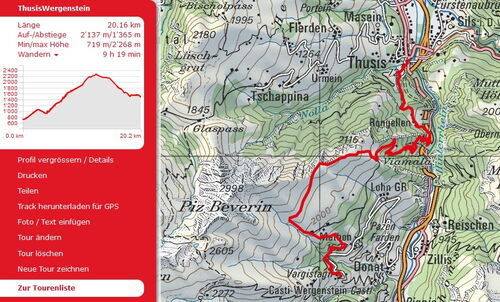
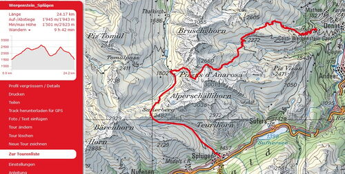
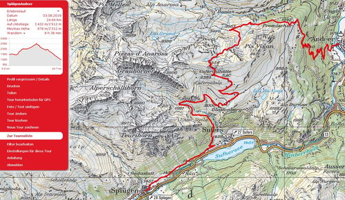

Erlebnislauf 3 Tage
Thusis_Splügen_Andeer
vom 23. bis 25. August geniessen wir wunderbare Tage in der Region Schamserberg - Safental - Rheinwald. Wir führen euch in das Gebiet des Naturpark Beverin und erfahren wissenswertes über die Region und die Heimat vieler Capricorns. Wunderbare Ausblicke am Fusse des Piz Beverin oder auf der Farcletta digl Lai Grand und auf dem Safierberg mit Blicke ins Rheinwald und viele weitere Aussichten...
Trailrunning im Wohlfühlbereich. Das Tempo passen wir dem Gelände an und geniessen dabei die schöne Landschaft. Wir haben auch Zeit um Pausen einzulegen. Ist das Gelände eben oder sogar abfallend so sind wir im Laufschritt unterwegs. Steilere Aufwärtspassagen werden auch in zügigem Wanderschritt bewältigt.
Thusis-Wergenstein

Thusis- Übernolla- Rongellen- Summapunt- Zwölfihorn- Maton- Wergenstein
20,1 Km +2100 hm / -1300 hm zur Strecke auf SchweizMobil
Der 3 tägige Erlenbnislauf startet in Thusis beim Treffpunkt Bahnhof. Der erste Tag führt uns erst gegen die Viamalaschlucht auf der rechten Rheinseite über Rongellen dann hoch nach Sumapunt und wir befinden uns am Schamserberg und erreichen auf dem Grat entlang das Zwölfihorn. Weiter über schöne Alpwiesen geht es runter nach Mathon und auf Wanderwegen weiter zum ersten Etappenort Wergenstein. Hier erwatet uns ein kleines z'Vieri bevor wir im Capricorns Hotel die Zimmer beziehen. Nach einem feinen regionalen Nachtessen erfahren wir interessantes über den Naturpark Beverin und informationen zur Tour vom Samstag.
Wergenstein - Splügen

Wergenstein- Dumagns -Alp Tumpriv- Alp Nurdang- Lai Grand- Farcletta digl Lai Grand- Höllgraben- Safiental z'Hinderst- Safierberg- Stutzalp- Splügen
24,1 Km +1900 hm / -1900 hm zur Strecke auf SchweizMobil
Die zweite Tour beginnt nach der Gepäckaufgabe direkt beim Hotel und da geht es auch gleich hoch in Richtung Alp Tumpriv und Alp Nurdagn. Wir laufen den Pizzas d'Anarosa entgegen am Lai Grand vorbei bis zur Farcletta digl Lai Grand in Hochalpiner Gegend. Nun folgt ein steiler Abstieg über Höllgraben ins Safiental, weiter über den Safierberg gelangen wir ins Rheinwald wo wir über die Stutzalp bald das Dörfchen Splügen erreichen. Ein z'Vieri gibt es wieder bevor wir die Zimmer im Hotel Suretta beziehen. Feines Essen aus der Region stärkt uns nach der anstrengenden Tour. Danach werden die Informationen zum folgenden Tag bekannt gegeben.

Splügen - Andeer

Splügen - Sufers - Steilerwald - Cuvercalhütte SAC - Promischur - Andeer
24,6 Km +1400 hm / -1900 hm zur Strecke auf SchweizMobil
Die dritte Tour führt uns nach Sufers, dann dem Steilerbach hoch bis Glattaberg, weiter zur Cuvercalhütte SAC. Vor dem Lai Calandari ist der höchte Punkt der Tour, die Strecke führt nun um den Piz Vizan nach Promischur und weiter dem Tal entgegen nach Andeer zum Etappenziel. Beim Schulhaus erwartet uns eine Abschlussverpflegung. Die Duschen bei der Turnhalle können benutzt werden. Nach einem kurzen Schlusswort und Abgbabe eines Erinnerungsgeschenks endet der Erlebnislauf. Unweit entfernt ist die Postautohaltestelle für die Heimreise.
Laufleiter Erlebnislauf
- Marco Jäger, Chur
- Petra Jäger, Chur
- Dani Zähner, Felsberg
- Michi Gisler, Bonaduz
- Dani Bold, Domat / Ems
- Martin Lüönd, Chur
bereits angemeldete Teilnehmer
- Isabella Lüönd, Chur
- Ursula Baer, Hägendorf
- Urs Ullmann, St.Niklausen
- Barbara Schuler, Schaan
- Ruedi Wirz, Felsberg
- Micheline Pang, Zürich
- Petra Bättig, Stäfa
- Barbara Miller, Horgen
- Cornelia Roth, Thun
- Maria Schmittel, Freiburg
- Toni Friedrich, Freiburg
- Jean-Marie Zogg, Bonaduz
- Michel Calonder Zogg, Winterthur
- Albert Thöni, Bonaduz
- Helene Arquint, Bonaduz
- Renato Betschard, Landquart
- Arnold Grischott, Paspels
- Monica Hug, Hombrechtikon
- Peter Hug, Hombrechtikon
- Christine Cantieni, Donat
- Sebastian Reich, Netstal
- Corina Müller- Nüesch, Chur Samstag/ Sonntag
- Röbi Conrad, Rodels, evtl. Sonntag
- Maria Conrad, Rodels, evtl. Sonntag